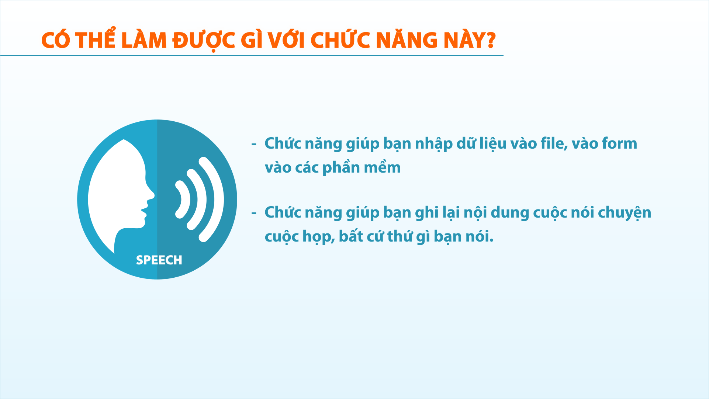
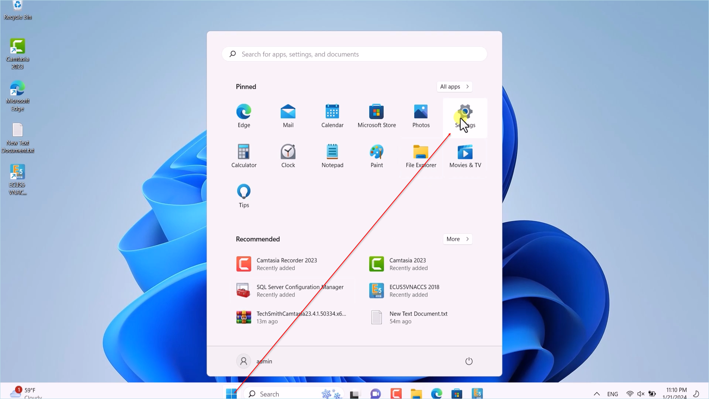
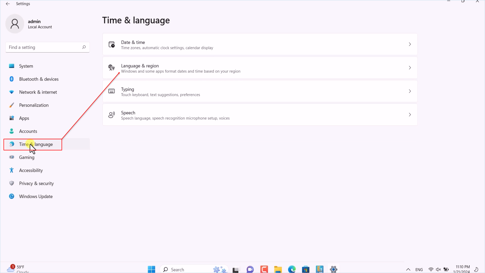
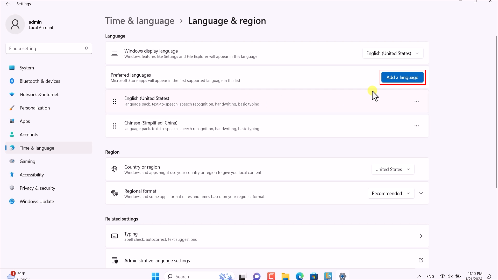
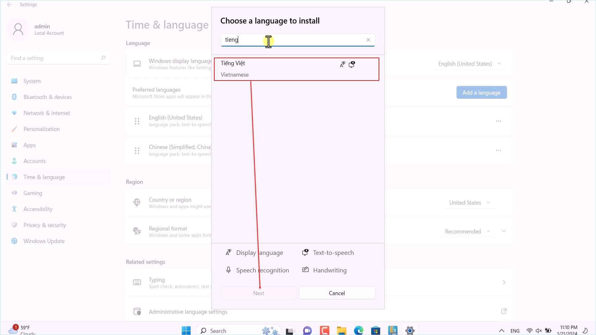
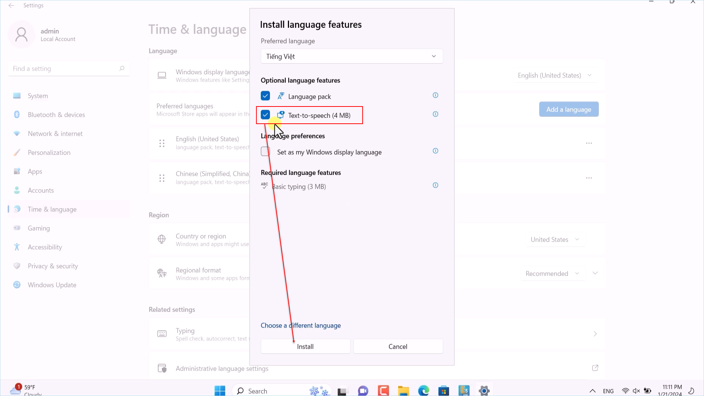
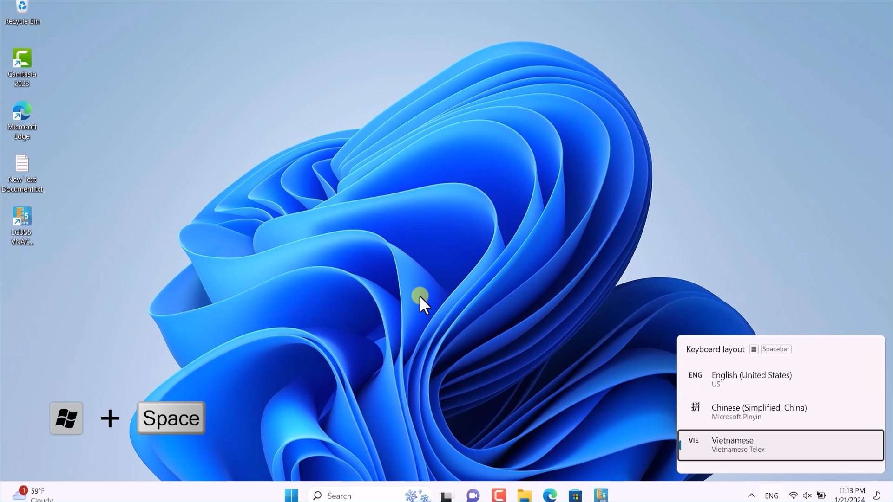
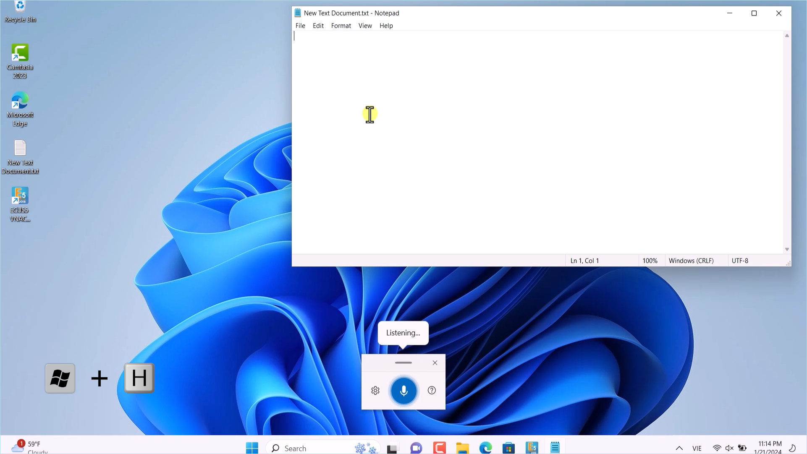
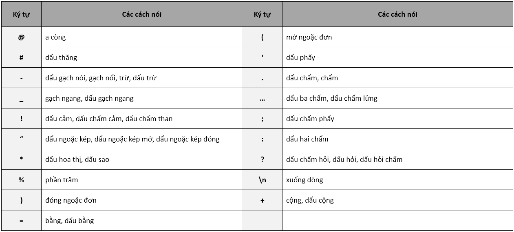

HƯỚNG DẪN NHẬP DỮ LIỆU BẰNG GIỌNG NÓI
(Bằng chức năng có sẵn trên hệ điều hành Windows 11)
Chức năng nhập từ giọng nói đã có từ rất lâu trên các thế hệ windows XP, vista, windows 10, nhưng chưa hỗ trợ ngôn ngữ Tiếng Việt. Với phiên bản windows 11, chức năng đã được cải tiến, tích hợp công nghệ AI và hỗ trợ rất nhiều ngôn ngữ khác nhau, trong đó có Tiếng Việt.
Giờ đây, người dùng Việt Nam đã có thể sử dụng chức năng này dễ dàng, với ngôn ngữ Tiếng Việt. (tất nhiên, bạn vẫn có thể sử dụng các ngôn ngữ khác tùy mục đích công việc).
Vậy, chúng ta có thể làm được gì với chức năng này:
- - Chức năng giúp bạn nhập dữ liệu vào file, vào form, vào các phần mềm.
- - Chức năng giúp bạn ghi lại nội dung cuộc nói chuyện, cuộc họp, bất cứ thứ gì bạn nói.

Trước khi sử dụng, bạn cần đảm bảo máy tính đang có kết nối internet, và tiến hành cài đặt các gói ngôn ngữ cần sử dụng (chỉ cần thực hiện 1 lần).
Bạn vào menu Start, chọn Setting

Chọn mục Time and Language ở cửa sổ hiện ra và chọn Language and region:

Nhấn vào Add a language để thêm mới ngôn ngữ muốn sử dụng.

Ví dụ cài đặt ngôn ngữ Tiếng Việt, thì bạn nhập vào tìm kiếm là tiếng việt. Chọn, và nhấn nút Next để cài đặt.

Nhấn Install và chờ một lát để máy tính tự động cài đặt gói ngôn ngữ. (Lưu ý, mục text to speech phải được đánh dấu tích chọn).

Để chọn ngôn ngữ nói, bạn nhấn tổ hợp phím Windows và phím Space bar, nhấn giữ phím Windows và nhấn phím Space bar để thay đổi ngôn ngữ.

Sau đó, bạn đưa trỏ chuột vào vùng có khả năng nhập liệu, như file word, hoặc text-box trên phần mềm. Và kích hoạt chức năng bằng cách nhấn tổ hợp phím Windows và H.

Để tham khảo một số khẩu lệnh, bạn xem chi tiết tại bảng sau:

Bản quyền © thuộc về Công ty TNHH Phát triển công nghệ Thái Sơn